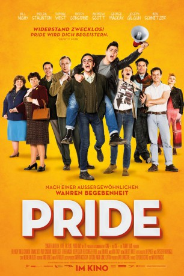
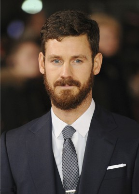

#3028 Pride
Auszeichnungen: 1 BAFTA-Awards gewonnen
 
 IMDB-Wertung: 7.8 / 10
IMDB-Wertung: 7.8 / 10  Metascore: 79
Metascore: 79 
Um gegen Zechenschließungen und Privatisierung zu kämpfen, die Margaret Thatchers Regierung beschlossen hat, treten auch die Bergarbeiter eines walisischen Dorfs in den Streik. Unerwartete und nicht unbedingt willkommene Unterstützung erhalten sie von einer kleinen schwul-lesbischen Aktivistengruppe aus London, die für die Kumpel Spenden sammelt. Als die urbanen Exoten das Dorf besuchen, schlagen Vorurteile durch, herrscht zunächst Distanz, bis man entdeckt, dass es weit mehr Gemeinsamkeiten als Unterschiede gibt.
Jahr: 2014
Dauer: 120 Minuten
FSK: 6
Land: England Studio: Senator FilmTonspuren: DTS - ,
Untertitel: Deutsch,
Auflösung: 1080p (1920x800) Größe: 8017 MB
Genre: Drama, Komödie, Geschichte, Biographie
Regisseur: Matthew Warchus
Drehbuch: Stephen Beresford
Soundtrack: Christopher Nightingale
Darsteller:
 Ben Schnetzer als Mark
Ben Schnetzer als Mark George MacKay als Joe
George MacKay als Joe Monica Dolan als Marion
Monica Dolan als Marion Andrew Scott als Gethin
Andrew Scott als Gethin Joseph Gilgun als Mike
Joseph Gilgun als Mike- Faye Marsay als Steph
 Freddie Fox als Jeff
Freddie Fox als Jeff Roger Morlidge als Wardrobe Master
Roger Morlidge als Wardrobe Master- Joshua Hill als Ray
 Dominic West als Jonathan
Dominic West als Jonathan- Adam Ewan als Lecturer
 Paddy Considine als Dai
Paddy Considine als Dai Karina Fernandez als Stella
Karina Fernandez als Stella Jessie Cave als Zoe
Jessie Cave als Zoe- Jessica Gunning als Sian
- Dion Lloyd-Jones als Miner - Come On
- Lisa Palfrey als Maureen
 Imelda Staunton als Hefina
Imelda Staunton als Hefina Liz White als Margaret
Liz White als Margaret Bill Nighy als Cliff
Bill Nighy als Cliff- Jack Baggs als Gary
- Laura Matthews als Tina
- Bronwen Lewis als Miner's Wife
- Julie Barclay als Woman 1
- Ed Coleman als Journalist 2
- Alexander Perkins als Smiley Straight Man
 Russell Tovey als Tim
Russell Tovey als Tim- Richard Shanks als Tim's Friend
- Derek Barr als Brian
-  Henry Garrett als Man
- James McGregor als Policeman
- Clare Lawrence Moody als TV Woman
 Jozef Aoki als Protestor , uncredited
Jozef Aoki als Protestor , uncredited Lasco Atkins als Protestor , uncredited
Lasco Atkins als Protestor , uncredited- Dennis Banks als Ticket Inspector , uncredited
- Perry Burke als Gay Protester , uncredited
 Steve Carroll als Miner , uncredited
Steve Carroll als Miner , uncredited- Silvia Crastan als Miner's Wife , uncredited
- Marlon G. Day als Ticket Clerk , uncredited
- Adam Gary als Drunk Guy In Street , uncredited
 Michael Haydon als Press Photographer , uncredited
Michael Haydon als Press Photographer , uncredited Bron James als LGSM Member , uncredited
Bron James als LGSM Member , uncredited- Emma Jason als Gay Protester , uncredited
 Jefferson King als Miner , uncredited
Jefferson King als Miner , uncredited- Alan Mandel als Disgruntled Miner , uncredited
 Rita McDonald Damper als Miner's Wife , uncredited
Rita McDonald Damper als Miner's Wife , uncredited Adrian Palmer als Gay Man , uncredited
Adrian Palmer als Gay Man , uncredited- Louise Port als Gay Pride marcher , uncredited
- Huw Samuel als Homosexual Protester , uncredited
- Margaret Thatcher als Herself , archive footage, uncredited
Datei: X:\2014(N-Z)\Pride (2014, FSK6, 1920x800).mkv seit 19.01.2016
Festplatte: HD 2013(I-Z)-2014(A-Z)
 Es gibt insgesamt 163 Filme in der Gruppe '2014(N-Z)'
Es gibt insgesamt 163 Filme in der Gruppe '2014(N-Z)'